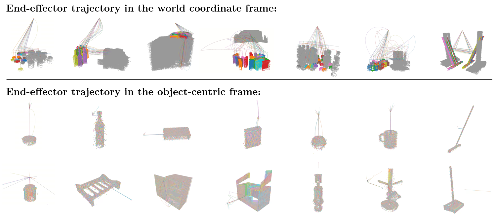
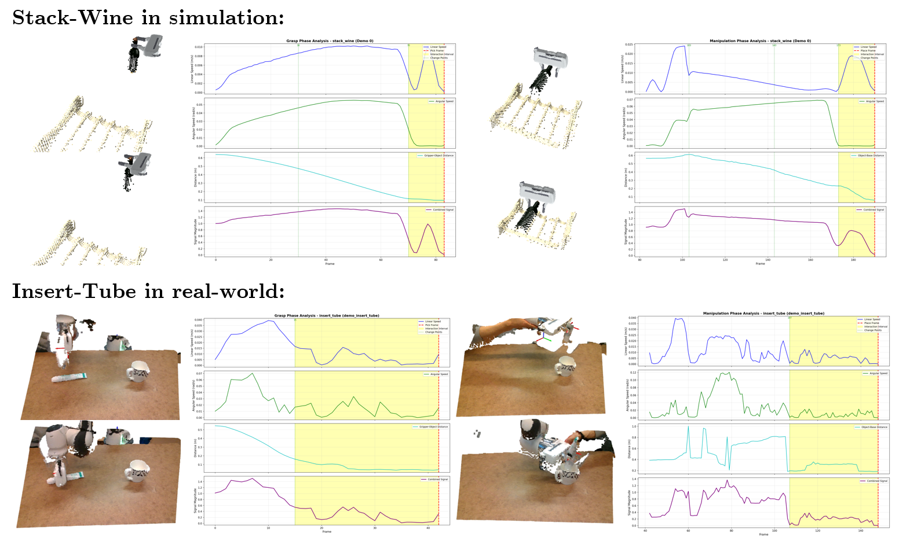
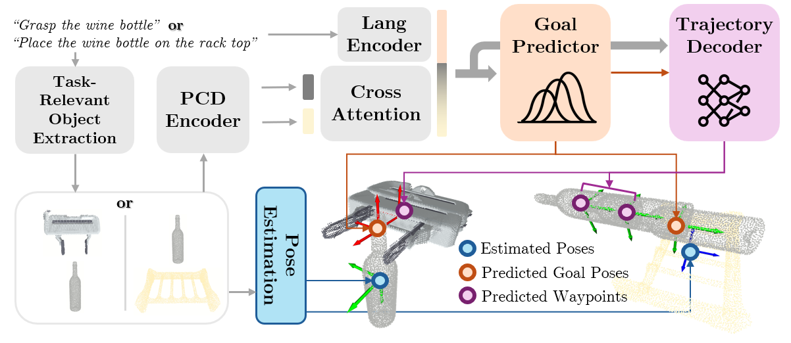
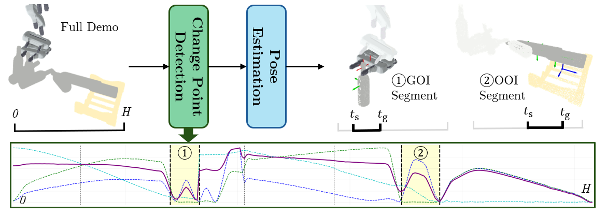

1. Spatial abstraction reduces trajectory variability.

2. Temporal abstraction isolates the only part that matters.

Main Takeaway: Object-centric interaction modeling enables one-shot relational manipulation.
Relational manipulation can be simplified through two complementary abstractions:
1. Spatial abstraction reduces trajectory variability.

2. Temporal abstraction isolates the only part that matters.


Foci Policy predicts relative SE(3) trajectories between task-relevant entities instead of end-effector trajectories.

Interaction intervals are automatically detected from demonstrations using change-point detection over kinematic and geometric signals.
Only 1 demonstration is provided for each task.
Meat on Grill
Phone on Base
Books on Shelf
Plate in Rack
Toilet Roll on Stand
Umbrella in Stand
Reach and Drag
Screw Nail
Slide Block
Stack Blocks
Stack Wine
Turn Tap
Foci Policy learns each manipulation task from a single demonstration and generalizes across diverse object configurations.
Insert Tube
Open Drawer
Pour Cup
Scale Grape
Sweep Dust
The same policy transfers from the original gripper to a Robotiq gripper and adapts to new backgrounds easily, without retraining the model.
Scale Grape
Insert Tube
Open Drawer
By separating task-critical interactions from unconstrained transport motion, Foci Policy can combine learned interaction trajectories with motion planning for obstacle avoidance and reliable execution in cluttered scenes.
Obstacle Avoidance
Cluttered Scene
@misc{fu2026focipolicy,
title={FOCI Policy: Focus on Object-Centric Interactions for Relational Manipulation Policies},
author={Ze Fu and Pinhao Song and Yutong Hu and Renaud Detry},
year={2026},
eprint={2609.08743},
archivePrefix={arXiv},
primaryClass={cs.RO},
url={https://arxiv.org/abs/2609.08743},
}